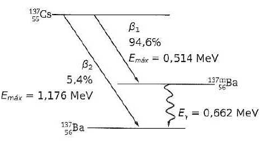

Aula 4 - Modos de Decaimento Nuclear
Física Moderna 2
Introdução
Na Aula 3 estudamos quando uma população radioativa diminui: meia-vida, atividade e a lei estatística de decaimento descrevem o comportamento de muitos núcleos. Nesta aula, mudamos a pergunta: como um núcleo individual se transforma quando ocorre um decaimento? A resposta está nas leis de conservação. Antes de decorar o nome de um processo, verificamos o número de massa \(A\), o número atômico \(Z\) e as partículas envolvidas.
O número de massa \(A\) conta os núcleons (prótons e nêutrons), enquanto \(Z\) conta os prótons e identifica o elemento químico. Assim, uma mudança em \(Z\) significa que o núcleo-filho é de outro elemento; uma mudança apenas na energia interna não muda a identidade do nuclídeo. Essa leitura simples permite reconhecer e balancear as equações nucleares sem depender de uma lista decorada de isótopos.
O núcleo-pai pode emitir uma partícula pesada (alfa), transformar nêutron em próton (\(\beta^-\)), transformar próton em nêutron (\(\beta^+\) ou captura eletrônica) ou apenas perder energia interna (gama). Também distinguiremos o evento nuclear de consequências atômicas posteriores: por exemplo, a captura eletrônica pode deixar uma vacância na eletrosfera e produzir raios X característicos ou elétrons Auger; já o pósitron emitido em um \(\beta^+\) pode aniquilar-se com um elétron do meio. Em cadeias longas, esses processos se combinam até que se forme um nuclídeo estável ou de vida muito longa.
Ao longo da aula, a mesma estratégia será usada em exemplos, diagramas de níveis e exercícios: identificar o processo, conservar \(A\) e \(Z\), interpretar as partículas emitidas e acompanhar o núcleo-filho. O foco é qualitativo e de contabilidade nuclear; cálculos de energia de reações induzidas serão tratados na aula seguinte.
Objetivos
Ao final da aula, devemos ser capazes de:
- escrever e balancear equações para \(\alpha\), \(\beta^-\), \(\beta^+\), captura eletrônica e \(\gamma\);
- relacionar cada modo à estabilidade nuclear e à variação de \(A\) e \(Z\);
- explicar o tunelamento no decaimento alfa e o espectro contínuo beta;
- distinguir emissão gama, raios X e aniquilação de pósitrons;
- analisar a contabilidade de uma série radioativa.
Tipos de decaimento e conservações
Um nuclídeo é identificado por \(\ce{^A_ZX}\), em que \(A=Z+N\). Em toda transformação nuclear, conservamos o número de núcleons e a carga elétrica. Neutrinos e fótons têm \(A=Z=0\); por isso não alteram a contabilidade nuclear, mas são decisivos para conservar energia, momento e número leptônico.
Nesta etapa, não calcularemos a energia das transformações. O foco é reconhecer o tipo de decaimento, escrever a equação nuclear e acompanhar as mudanças de \(A\) e \(Z\). A energia de reação será tratada posteriormente, quando estudarmos reações nucleares induzidas.

Na figura, a folha de papel ilustra por que uma alfa externa é facilmente atenuada, enquanto uma blindagem mais espessa é necessária para fótons gama. A seta beta não deve ser lida como uma regra universal de alcance: a energia da partícula e o material alteram a distância percorrida. A comparação organiza as ideias de ionização e penetração, mas não substitui um projeto real de proteção radiológica.

Leia o mapa como uma orientação na carta de nuclídeos: decaimento alfa move o ponto duas colunas para a esquerda e quatro unidades de massa abaixo; \(\beta^-\) leva a uma unidade maior de \(Z\); \(\beta^+\) e captura eletrônica fazem o movimento oposto. A figura resume visualmente as mesmas conservações usadas para balancear as equações.
Neutrinos e antineutrinos nas transformações beta
Neutrinos são partículas elementares sem carga elétrica e com massa muito pequena, mas não nula. Interagem principalmente pela interação fraca; por isso atravessam enormes quantidades de matéria antes de interagir e não são detectados pelos instrumentos usuais de laboratório escolar. O índice \(e\) em \(\nu_e\) e \(\bar{\nu}_e\) identifica a família eletrônica.
No decaimento \(\beta^-\), ocorre
\[\ce{n -> p}+\beta^-+\bar{\nu}_e. \]
O elétron tem número leptônico eletrônico \(+1\); para conservar esse número, o processo emite um antineutrino eletrônico, cujo número leptônico é \(-1\). Já em \(\beta^+\) e captura eletrônica, os processos são
\[ \ce{p -> n}+\beta^++\nu_e, \qquad \ce{p + e^- -> n + \nu_e}, \]
e produzem um neutrino eletrônico. Além de participar das conservações, o neutrino ou antineutrino transporta momento; sua introdução resolveu a aparente violação de conservação observada nos espectros beta. Em alfa e gama, não há neutrino na equação elementar de emissão, embora outras etapas de uma cadeia possam envolver processos beta.
Exemplo 4.1: Qual partícula falta?
Complete:
\[\ce{^{32}_{15}P -> ^{32}_{16}S}+\beta^-+\text{partícula desconhecida}. \]
Como \(Z\) aumenta de 15 para 16, trata-se de \(\beta^-\). A partícula faltante é o antineutrino eletrônico:
\[\ce{^{32}_{15}P -> ^{32}_{16}S}+\beta^-+\bar{\nu}_e. \]
Decaimento alfa
No decaimento alfa, o núcleo emite um núcleo de hélio-4:
\[\ce{^A_ZX -> ^{A-4}_{Z-2}Y + ^4_2He}. \]
Ele é frequente em núcleos muito pesados. A partícula alfa está ligada ao núcleo, mas a mecânica quântica permite uma probabilidade finita de atravessar a barreira coulombiana por tunelamento. A meia-vida resulta dessa probabilidade e da estrutura do núcleo.

Na figura, compare o núcleo antes e depois da emissão: o filho possui dois prótons e dois nêutrons a menos, que formam a partícula alfa. O desenho esquemático não mostra a escala de alcance no ar ou em um material; ele serve para visualizar a conservação de \(A\) e \(Z\) na transformação.
Características e situações do cotidiano
A alfa é uma partícula relativamente pesada, com carga \(+2\). Ela perde energia rapidamente ao atravessar a matéria e, por isso, tem alto poder de ionização e pequeno alcance: uma folha de papel, a camada externa da pele ou poucos centímetros de ar já reduzem muito sua passagem. Essa descrição não autoriza manuseio de fontes: o risco muda profundamente quando um emissor alfa é inalado ou ingerido, porque a energia é então depositada em um volume muito pequeno de tecido.
Um exemplo cotidiano relevante é o radônio, gás radioativo produzido em etapas das séries do urânio e do tório. Ele pode se acumular em ambientes pouco ventilados, como porões e térreos. Detectores de fumaça por ionização também empregaram historicamente pequenas fontes seladas de amerício-241; qualquer descarte deve seguir as orientações do fabricante e da coleta autorizada, nunca desmontagem doméstica.
Exemplo 4.2: Urânio-238
\[\ce{^{238}_{92}U -> ^{234}_{90}Th + ^4_2He}. \]
O exemplo mostra a regra de identificação: a emissão de \(\ce{^4_2He}\) reduz \(A\) de 238 para 234 e \(Z\) de 92 para 90. Portanto, urânio transforma-se em tório. A partícula alfa tem carga \(+2\) e é fortemente ionizante, mas possui alcance pequeno em materiais comuns.
Decaimento beta menos
Em um núcleo rico em nêutrons, a interação fraca pode realizar
\[\ce{n -> p}+\beta^-+\bar{\nu}_e,\qquad \ce{^A_ZX -> ^A_{Z+1}Y}+\beta^-+\bar{\nu}_e. \]
\(A\) não muda e \(Z\) aumenta uma unidade. O elétron não estava guardado no núcleo: ele é criado no evento, junto com o antineutrino. Como há três corpos no estado final, elétron, antineutrino e núcleo de recuo compartilham momento; experimentalmente, observa-se um espectro beta contínuo.

O ponto central do esquema é a troca de um nêutron por um próton no núcleo. Por isso, o número de núcleons permanece constante e \(Z\) aumenta uma unidade; o elétron e o antineutrino são criados no evento, não estavam previamente armazenados no núcleo.
Características e situações do cotidiano
A radiação \(\beta^-\) é formada por elétrons emitidos pelo núcleo. Ela costuma ter alcance maior que a alfa e menor poder de ionização por unidade de percurso; a blindagem depende da energia, e materiais de baixo número atômico, como acrílico, são frequentemente preferidos antes de blindagens metálicas espessas. O ponto central é que \(A\) se conserva e \(Z\) aumenta em uma unidade.
O carbono-14, usado na datação de materiais orgânicos, é um exemplo de emissor \(\beta^-\). Outros emissores beta aparecem em medidores industriais de espessura e em radiofármacos terapêuticos. Em todos esses casos, aplicação útil não equivale a exposição livre: fonte, atividade, blindagem, tempo e procedimento determinam o risco.
Exemplo 4.3: Carbono-14
\[\ce{^{14}_{6}C -> ^{14}_{7}N}+\beta^-+\bar{\nu}_e. \]
O número de massa continua 14 e o número atômico aumenta de 6 para 7. É, portanto, uma transformação de carbono em nitrogênio. Esse tipo de decaimento ajuda núcleos com excesso de nêutrons a se aproximarem da região de estabilidade.
Decaimento beta mais
Núcleos ricos em prótons podem reduzir \(Z\) sem alterar \(A\). No beta mais,
\[\ce{^A_ZX -> ^A_{Z-1}Y}+\beta^++\nu_e.\]
No nível elementar, \(p\to n+\beta^++\nu_e\). Assim como no \(\beta^-\), a transformação é mediada pela interação fraca. Nesta aula, usaremos a variação de \(A\) e \(Z\) para identificar o processo; o balanço de massas será retomado no estudo de energia de reação.

O esquema deve ser lido como a conversão de um próton em nêutron: \(A\) não varia e \(Z\) diminui uma unidade. O pósitron e o neutrino aparecem juntos no processo fraco; eles não têm o mesmo papel do fóton gama, que representa uma desexcitação posterior de um núcleo.
O pósitron encontra um elétron e aniquila-se, produzindo usualmente dois fótons de cerca de \(511\,\text{keV}\) em direções quase opostas. Essa coincidência é a base física da PET, que reconstrói estatisticamente a distribuição do radiofármaco.

O desenho separa duas etapas que não devem ser confundidas: o decaimento \(\beta^+\) produz um pósitron e um neutrino; depois, já no material ao redor, o pósitron encontra um elétron e ocorre a aniquilação. Os fótons não substituem o neutrino na equação nuclear — eles pertencem ao evento posterior de aniquilação.

O anel ao redor do paciente contém detectores distribuídos em muitas direções. Quando dois detectores opostos registram fótons quase simultaneamente, o sistema associa o par a uma linha de resposta; muitas linhas, obtidas ao longo do exame, permitem reconstruir a distribuição do radiofármaco.
Na PET, radiofármacos marcados com emissores de pósitron, como o flúor-18, acompanham processos fisiológicos — por exemplo, a captação de uma molécula análoga à glicose. Os detectores registram pares de fótons em coincidência e o computador reconstrói linhas de resposta. O exame informa distribuição funcional do traçador; não mede diretamente uma “foto da radiação”.
Exemplo 4.4: Carbono-11
\[\ce{^{11}_{6}C -> ^{11}_{5}B}+\beta^++\nu_e. \]
O número de massa se mantém igual a 11, enquanto \(Z\) diminui de 6 para 5. O pósitron emitido pode aniquilar-se com um elétron do meio; os dois fótons produzidos quase em direções opostas são a assinatura aproveitada em exames PET.
Captura eletrônica
Na captura eletrônica, um elétron orbital é absorvido:
\[\ce{^A_ZX + e^- -> ^A_{Z-1}Y + \nu_e}. \]
Assim como no \(\beta^+\), \(A\) permanece constante e \(Z\) diminui uma unidade. A diferença experimental é decisiva: não há pósitron para aniquilar; em vez disso, a vacância eletrônica criada pela captura pode produzir raios X característicos ou elétrons Auger. Um exemplo natural é o berílio-7; o iodo-125 é empregado, sob controle especializado, em aplicações médicas.
Na captura eletrônica, a vacância costuma surgir em uma camada interna. Um elétron de uma camada mais externa ocupa essa vaga. A diferença entre os níveis pode sair como um raio X característico, cujo valor depende do elemento químico, ou ser transferida a outro elétron ligado. Neste segundo caso, o elétron recebe energia suficiente para deixar o átomo: é o elétron Auger. A emissão Auger não é uma nova transformação nuclear; é uma consequência do rearranjo eletrônico que se segue à captura.

As duas possibilidades desenhadas partem da mesma vacância: a transição pode liberar um fóton X, ou sua energia pode ser entregue a outro elétron, que é ejetado como Auger. Ambas acontecem na eletrosfera após a captura; não mudam novamente \(A\) ou \(Z\) do núcleo já transformado.
Como raios X e elétrons Auger têm alcance curto em matéria, emissores por captura eletrônica podem depositar energia muito localmente quando incorporados a um material. Essa característica é explorada em contextos controlados de medicina nuclear e análise de materiais; não é uma justificativa para exposição fora de procedimentos autorizados.
Exemplo 4.5: Captura eletrônica do berílio-7
Complete a equação:
\[\ce{^{7}_{4}Be + e^- -> X + \nu_e}. \]
Na captura eletrônica, \(A\) não muda e \(Z\) diminui uma unidade. Portanto,
\[A_X=7,\qquad Z_X=4-1=3,\]
e o núcleo-filho é \(\ce{^{7}_{3}Li}\). A vacância deixada na eletrosfera do berílio é a origem possível de raios X característicos ou elétrons Auger.
Emissão gama
Um núcleo filho pode nascer excitado. A emissão gama é sua desexcitação:
\[\ce{^A_ZX^* -> ^A_ZX + \gamma}. \]
Nem \(A\) nem \(Z\) mudam: muda somente o estado interno do núcleo. Raios X e raios gama são fótons; a distinção usual é a origem — transição eletrônica para X, transição nuclear para gama.
Diagramas de decaimento e leitura de níveis
Um diagrama de decaimento não representa a posição espacial dos núcleos: a altura de cada linha horizontal representa um nível de energia. Setas inclinadas ou verticais mostram transições; uma transição beta pode alimentar um estado excitado do núcleo-filho e uma transição gama posterior o leva a um nível mais baixo. Por isso, o mesmo processo pode exibir uma partícula beta e, em seguida, fótons gama.

No césio-137, acompanhe primeiro a seta beta até o bário-137 metaestável e só então a seta gama até o nível fundamental. Essa sequência mostra que a mudança de elemento ocorre no beta; o gama subsequente apenas remove energia do núcleo de bário já formado.
Os três diagramas seguintes permitem praticar a mesma leitura em situações diferentes. Observe que os números junto às setas podem indicar energia, intensidade de uma ramificação ou energia máxima de uma partícula beta. Não é necessário memorizar esses valores: o essencial é seguir o estado inicial, a seta e o nível final.

No \(\ce{^{22}Na}\), as setas inclinadas mudam o elemento de sódio para neônio, pois representam \(\beta^+\) ou captura eletrônica. A seta vertical dentro do neônio não muda \(A\) nem \(Z\): ela é uma desexcitação gama. Esse é um bom exemplo de que um mesmo nuclídeo pode ter mais de uma ramificação e de que uma transição gama pode ocorrer depois de uma transformação beta.

O esquema apresenta duas transformações distintas: na primeira seta, o molibdênio-99 sofre \(\beta^-\) e forma tecnécio-99m, portanto \(Z\) passa de 42 para 43; na segunda, o tecnécio-99m emite gama e continua sendo tecnécio-99. A meia-vida de cerca de seis horas indicada para o estado metaestável explica por que esse nuclídeo é importante em medicina nuclear e reforça que a desexcitação gama não altera a contagem de núcleons.

No \(\ce{^{131}I}\), a passagem de iodo (\(Z=53\)) para xenônio (\(Z=54\)) identifica o \(\beta^-\). As setas gama desenhadas entre os níveis do xenônio mostram a desexcitação posterior. Assim, o diagrama separa claramente dois eventos: a transformação nuclear beta, que muda \(Z\), e a emissão gama, que apenas reduz a energia do núcleo-filho.
Para um fóton, o comprimento de onda é dado por
\[ \lambda=\frac{hc}{E}, \qquad hc=1240\,\text{MeV fm}. \]
Ao usar \(E\) em MeV, \(\lambda\) sai em fm. Por exemplo, para o fóton gama de \(0{,}662\,\text{MeV}\) do diagrama, \(\lambda\approx 1240/0{,}662=1{,}87\times10^3\,\text{fm}\). A relação permite comparar fótons gama: maior energia corresponde a menor comprimento de onda. Ela não altera \(A\) ou \(Z\) e não deve ser confundida com a constante de decaimento radioativo, também muitas vezes escrita como \(\lambda\).
No cotidiano, emissão gama aparece em medicina nuclear, esterilização industrial e inspeção radiográfica de peças. Essas aplicações exigem proteção radiológica específica, porque fótons de maior energia podem atravessar mais material; a blindagem correta depende da energia, da geometria e da taxa de exposição.
Exemplo 4.6: Comprimento de onda de um fóton gama
No diagrama do césio-137 aparece um fóton gama de \(E=0{,}662\,\text{MeV}\). Assim,
\[ \lambda=\frac{1240\,\text{MeV fm}}{0{,}662\,\text{MeV}} =1{,}87\times10^3\,\text{fm}. \]
As unidades MeV se cancelam e resta fm. O cálculo descreve o fóton gama; ele não muda a identidade do núcleo, que permanece bário-137 antes e depois da transição.
Séries radioativas
Em uma série, o núcleo-filho também é instável e a sequência prossegue. Alfa reduz \(A\) em 4; os decaimentos beta não alteram \(A\). Portanto, o resto da divisão inteira de \(A\) por 4 é preservado ao longo de toda a cadeia.
As séries naturais de maior importância incluem \(\ce{^{232}Th -> ^{208}Pb}\), \(\ce{^{238}U -> ^{206}Pb}\) e \(\ce{^{235}U -> ^{207}Pb}\). A série do netúnio tem origem predominantemente artificial na Terra atual. O objetivo não é decorar todos os intermediários, mas testar a contabilidade de \(A\) e \(Z\).
Método do resto da divisão por 4
Para determinar a família de um radionuclídeo, use apenas o número de massa \(A\):
- divida \(A\) por 4;
- anote o resto;
- associe o resto à família: resto 0 → tório; resto 1 → netúnio; resto 2 → urânio; resto 3 → actínio.
Nas figuras, acompanhe uma seta por vez: cada alfa muda \(A\) em \(-4\) e cada beta mantém \(A\). Em ambos os casos, o resto da divisão por 4 não muda. As quatro imagens abaixo são versões locais de diagramas disponíveis na categoria Decay chain da Wikimedia Commons.
As séries explicam por que o radônio pode surgir a partir de materiais geológicos que contêm urânio ou tório: ele é um descendente intermediário, não um elemento “adicionado” ao ambiente. Ventilação e medição apropriada são as medidas relevantes quando há suspeita de concentração elevada em ambientes fechados.
Exemplo 4.7: Contabilidade líquida
Para \(\ce{^{232}_{90}Th -> ^{208}_{82}Pb}\), seis alfas são necessários porque \(232-4x=208\), logo \(x=6\). Após as alfas, \(Z=90-12=78\); quatro \(\beta^-\) levam a \(Z=82\). A ordem real dos intermediários requer dados nucleares, mas a conta líquida verifica a cadeia.
Exemplo 4.8: Identificando a família pelo resto
Classifique o nuclídeo de massa \(A=227\). Faça a divisão inteira:
\[227\div4=56\quad\text{com resto}\quad3.\]
O resto é 3; pela regra acima, o nuclídeo pertence à família do actínio. Não é preciso decorar a expressão \(4n+3\): basta dividir o número de massa por 4 e consultar o resto. Essa conta não determina todos os núcleos da cadeia, mas é uma verificação rápida de que emissões alfa e beta preservam a família.
Exemplo 4.9: Beta mais e neutrino
Complete:
\[\ce{^{22}_{11}Na -> ^{22}_{10}Ne}+\beta^++\text{partícula desconhecida}. \]
O número de massa permanece 22 e \(Z\) diminui de 11 para 10, identificando um \(\beta^+\). A partícula faltante é o neutrino eletrônico:
\[\ce{^{22}_{11}Na -> ^{22}_{10}Ne}+\beta^++\nu_e. \]
O pósitron poderá aniquilar-se com um elétron do meio; esse evento posterior não substitui o neutrino que pertence à transformação nuclear.
Síntese da aula
- \(\alpha\): \(A\to A-4\), \(Z\to Z-2\); emissão pesada e tunelamento.
- \(\beta^-\): \(A\) constante, \(Z\to Z+1\); elétron e antineutrino.
- \(\beta^+\) e captura: \(A\) constante, \(Z\to Z-1\); neutrino; no beta mais há emissão de pósitron, e na captura um elétron orbital é absorvido.
- \(\gamma\): o nuclídeo não muda; apenas perde energia interna.
Exercícios de Fixação
Questões Conceituais
- 4.1)
- No decaimento \(\beta^-\), a partícula emitida juntamente com o elétron é necessária, entre outras razões, para conservar o número leptônico. Essa partícula é:
- um fóton gama.
- uma partícula alfa.
- um neutrino eletrônico.
- um antineutrino eletrônico.
- um elétron Auger.
- 4.2)
- Os decaimentos \(\beta^+\) e por captura eletrônica podem levar ao mesmo núcleo-filho. A afirmação correta é:
- na captura eletrônica, o núcleo emite um pósitron e um antineutrino.
- ambos conservam \(A\), diminuem \(Z\) em uma unidade e emitem um neutrino eletrônico; somente o \(\beta^+\) emite um pósitron.
- no \(\beta^+\), \(Z\) aumenta uma unidade e o número de massa diminui quatro unidades.
- somente a captura eletrônica produz um neutrino eletrônico.
- os dois processos sempre produzem dois fótons de \(511\,\text{keV}\) diretamente no núcleo.
- 4.3)
- Após uma captura eletrônica, uma vacância em camada interna pode levar à emissão de raios X característicos ou de elétrons Auger. O elétron Auger é emitido porque:
- o núcleo emite uma segunda partícula beta.
- a energia da transição vem de uma transformação nuclear adicional.
- a energia de um rearranjo eletrônico é transferida a outro elétron ligado, que é ejetado como Auger.
- o antineutrino é absorvido pela eletrosfera.
- a massa do núcleo diminui em quatro unidades.
- 4.4)
- Um diagrama mostra uma transformação beta que chega a um estado excitado do núcleo-filho, seguida por uma seta gama. A leitura correta é:
- a transição beta muda \(Z\); a emissão gama posterior reduz a energia interna sem mudar \(A\) nem \(Z\).
- a seta gama transforma o núcleo-pai em outro elemento, e a beta apenas remove energia.
- ambas as setas representam captura eletrônica.
- a emissão gama reduz \(A\) em quatro unidades.
- a sequência dispensa a conservação de carga, pois o núcleo está excitado.
- 4.5)
- Qual afirmação distingue corretamente a radiação alfa da beta menos?
- A alfa aumenta \(Z\) em uma unidade e emite antineutrino.
- A beta menos reduz \(A\) em quatro unidades.
- Ambas são fótons produzidos por desexcitação nuclear.
- A beta menos é bloqueada sempre por uma folha de papel.
- A alfa é um núcleo de hélio-4, fortemente ionizante e de alcance curto em materiais comuns.
Questões de Cálculo
Em cada item, organize a conservação de \(A\) e \(Z\) antes de escolher a alternativa. Para fótons gama, use \(hc=1240\,\text{MeV fm}\). Esta aula não requer cálculo de energia de reação.
- 4.6)
- Complete \(\ce{^{222}_{86}Rn -> X + ^4_2He}\).
- \(\ce{^{218}_{82}Pb}\)
- \(\ce{^{218}_{86}Rn}\)
- \(\ce{^{218}_{84}Po}\)
- \(\ce{^{220}_{84}Po}\)
- \(\ce{^{226}_{88}Ra}\)
- 4.7)
- Complete \(\ce{^{35}_{16}S -> X}+\beta^-+\bar{\nu}_e\).
- \(\ce{^{35}_{15}P}\)
- \(\ce{^{31}_{14}Si}\)
- \(\ce{^{36}_{17}Cl}\)
- \(\ce{^{35}_{17}Cl}\)
- \(\ce{^{35}_{16}S}\)
- 4.8)
- Em um radiofármaco PET, complete o decaimento \(\beta^+\) do flúor-18: \(\ce{^{18}_{9}F -> X}+\beta^++\nu_e\).
- \(\ce{^{18}_{9}F}\)
- \(\ce{^{18}_{8}O}\)
- \(\ce{^{18}_{10}Ne}\)
- \(\ce{^{14}_{7}N}\)
- \(\ce{^{19}_{8}O}\)
- 4.9)
- O iodo-125 pode sofrer captura eletrônica. Complete \(\ce{^{125}_{53}I + e^- -> X + \nu_e}\).
- \(\ce{^{125}_{52}Te}\)
- \(\ce{^{125}_{53}I}\)
- \(\ce{^{125}_{54}Xe}\)
- \(\ce{^{121}_{51}Sb}\)
- \(\ce{^{126}_{52}Te}\)
- 4.10)
- Para o fóton gama de aproximadamente \(140{,}5\,\text{keV}\) emitido na desexcitação do tecnécio-99m, o comprimento de onda é aproximadamente:
- \(8{,}83\,\text{fm}\)
- \(88{,}3\,\text{fm}\)
- \(883\,\text{fm}\)
- \(1{,}13\times10^3\,\text{fm}\)
- \(8{,}83\times10^3\,\text{fm}\)
- 4.11)
- No trecho de diagrama \(\ce{^{131}_{53}I ->[\beta^-] ^{131}_{54}Xe^* ->[\gamma] X}\), o núcleo final \(X\) é:
- \(\ce{^{127}_{51}Sb}\)
- \(\ce{^{131}_{53}I}\)
- \(\ce{^{131}_{54}Xe}\)
- \(\ce{^{131}_{52}Te}\)
- \(\ce{^{135}_{55}Cs}\)
- 4.12)
- Uma emissão alfa seguida de duas emissões \(\beta^-\), partindo de \(\ce{^{226}_{88}Ra}\), leva a:
- \(\ce{^{222}_{86}Rn}\)
- \(\ce{^{222}_{87}Fr}\)
- \(\ce{^{226}_{86}Rn}\)
- \(\ce{^{222}_{88}Ra}\)
- \(\ce{^{218}_{86}Rn}\)
- 4.13)
- Na transformação líquida \(\ce{^{238}_{92}U -> ^{206}_{82}Pb}\), o número de emissões é:
- 6 alfas e 4 \(\beta^-\)
- 8 alfas e 6 \(\beta^-\)
- 8 alfas e 4 \(\beta^-\)
- 6 alfas e 6 \(\beta^-\)
- 8 alfas e 8 \(\beta^-\)
- 4.14)
- Ao dividir o número de massa \(A=229\) por 4, o resto é 1. Pelo método do resto, o radionuclídeo pertence à família:
- família do netúnio (\(4n+1\))
- família do tório (\(4n\))
- família do urânio (\(4n+2\))
- família do actínio (\(4n+3\))
- não pertence a uma família radioativa
- 4.15)
- Na transformação líquida \(\ce{^{235}_{92}U -> ^{207}_{82}Pb}\), são necessários:
- 6 alfas e 4 \(\beta^-\)
- 7 alfas e 3 \(\beta^-\)
- 8 alfas e 6 \(\beta^-\)
- 7 alfas e 5 \(\beta^-\)
- 7 alfas e 4 \(\beta^-\)
Recomendações

Vídeo em português para retomar estabilidade nuclear, transformações e a leitura de processos radioativos.

Continuação da sequência da UNIVESP, útil para relacionar decaimentos às conservações de número de massa e carga.

Revisão visual, em português, de radioatividade, partículas e meia-vida; serve como apoio à identificação de emissões alfa, beta e gama.

Vídeo em português sobre leis da radioatividade e captura de elétron da camada K; use-o para retomar por que \(A\) se conserva e \(Z\) diminui uma unidade.
Vídeo complementar, em inglês, dedicado ao rearranjo eletrônico, aos raios X característicos e aos elétrons Auger após a formação de uma vacância interna.
Referências Utilizadas Nesta Aula
- KRANE, K. S. Introductory Nuclear Physics. Wiley, 1988.
- LILLEY, J. Nuclear Physics: Principles and Applications. Wiley, 2001.
- MARTIN, B. R. Nuclear and Particle Physics. Wiley, 2009.
- WANG, M. et al. The AME 2020 atomic mass evaluation (II). Chinese Physics C, 2021.
- WIKIMEDIA COMMONS. Radioactive decay modes, Alpha decay, Beta-minus decay e Beta-plus decay. Créditos e licenças indicados nas legendas.
- MAXMATH12. Positron annihilation.svg, CC0; MAUS, Jens. ECAT-Exact-HR–PET-Scanner.jpg, domínio público; PAMPUTT. Atomic rearrangement following an electron capture, CC BY-SA 4.0.
- WIKIMEDIA COMMONS. Na-22 decay scheme, CC0; TUNGSTEN, Yuri. Esquema do decaimento do Mo-99 para o Tc-99m, CC BY-SA 4.0; Iodine-131 decay scheme, domínio público.
- WIKIMEDIA COMMONS. Category: Decay chain; diagramas das famílias radioativas, conforme créditos nas figuras.
{kind=link}
{kind=link}
{kind=link}
{kind=link}
{kind=link}
{kind=link}
{kind=link}
{kind=link}
{kind=link}
{kind=link}
Apêndice A — Família do tório (\(4n\))
O tório-232 inicia a família \(4n\), que termina em chumbo-208. Leia as setas alfa e beta menos como transformações sucessivas: elas preservam o resto de \(A\) por quatro.
.PNG)
Comece no tório-232 e siga uma única seta por vez até o chumbo-208. As setas alfa diminuem simultaneamente \(A\) e \(Z\), enquanto as setas \(\beta^-\) mantêm \(A\) e aumentam \(Z\); por isso todos os núcleos da figura permanecem na classe \(4n\).
Apêndice B — Família do netúnio (\(4n+1\))
A família \(4n+1\) é associada ao netúnio. Seus integrantes têm presença muito menor na Terra atual do que as famílias iniciadas por tório-232, urânio-238 e urânio-235.
.PNG)
Nesta família, os números de massa são sempre da forma \(4n+1\). A figura é útil para perceber que uma série pode ter muitas etapas e ramificações sem perder essa identidade modular: alfa altera \(A\) em quatro e beta menos não o altera.
Apêndice C — Família do actínio (\(4n+3\))
A família do actínio é a cadeia iniciada pelo urânio-235 e termina em chumbo-207. O diagrama permite acompanhar ramificações, núcleos-filho e os modos de decaimento em sequência.
.PNG)
O diagrama parte do urânio-235, cujo número de massa deixa resto 3 na divisão por quatro. Ao percorrer uma ramificação, use as setas para conferir a contabilidade local antes de tentar reconhecer o núcleo seguinte; assim, o diagrama vira uma aplicação direta das regras de \(A\) e \(Z\).
Apêndice D — Família do urânio (\(4n+2\))
A família do urânio é associada ao urânio-238 e termina em chumbo-206. Ela contém o radônio como intermediário, conexão importante com a radioatividade em ambientes geológicos.
.PNG)
Aqui o urânio-238 inicia a classe \(4n+2\) e a cadeia termina em chumbo-206. Localize o radônio como um intermediário e observe que sua presença decorre de sucessivas transformações da cadeia; ele não é uma etapa independente da família.